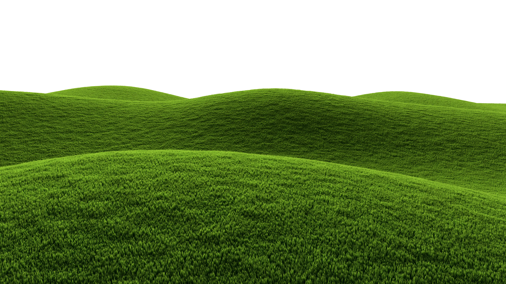

Notes While You Work
Rewrite reads the page you are on and writes the facts, definitions and steps, with the key terms marked.

Rewrite watches your screen while you work or study
and writes the notes. Quick glances don't count.

Docs, videos, code and chats:
anything on your screen
You look away for eight seconds to answer a message. A screen recorder would keep that. Rewrite throws it away, and writes down only what you were actually working on.
A quick look at a social, chat or music app inside the limit never counts. Anything else you switch to is kept.
Frames are read, turned into notes, then dropped. Only the notes are kept, in your browser.
Rewrite looks at one still frame a second while a session is on. It never records video.
Claude with your own key, or on your laptop with nothing sent anywhere.
One page in your browser. Start it, get on with your day,
and come back to notes.
Rewrite reads the page you are on and writes the facts, definitions and steps, with the key terms marked.
A quick look at Discord or Spotify is recognised on your laptop and left out. It is never saved or sent anywhere.
With Claude, every session ends with the main takeaways and a few questions to test yourself.
Focus time by day and by topic, counted from what you actually did.
Start a session, carry on as normal, and
read your notes in four simple steps.
Press start and share your screen. A small pill shows it is taking notes.
Read, watch, write or code. Rewrite looks at your screen about once a second.
Check a message and come back. Quick visits to social, chat and music apps are left out.
Press finish and your notes are ready, filed by topic and saved in your browser.
Instead of splitting your attention between the page
and your notebook, let Rewrite write while you work.
Numbers from the sample day shown in the demo.
Every note is filed by topic.
Drag one to another column to re-file it.

These are notes from the built-in sample session, as Rewrite wrote them. Press play to watch it happen.

The membrane is a phospholipid bilayer: heads face the water, tails face inward. It is selectively permeable.
Mitochondria make most of the cell's ATP through cellular respiration. The inner membrane folds into cristae.
Start with the sample. Switch
whenever you like.
See it work before you
set anything up.
Uses your own Claude key
from Anthropic.
Your screen never leaves the
laptop. No key needed.
It looks at about one still frame a second while a session is on, and nothing is saved as video. With Claude, a few still frames are sent to Anthropic to be read. With "On this laptop", your screen is never sent.
A visit to a social, chat, music or video app that lasts less than 20 seconds (you can set 5 to 60). Rewrite recognises these on your laptop and leaves them out. Switching to anything else, like another doc or an AI assistant, is kept as part of your work.
No. "On this laptop" reads the text on your screen in the browser and pulls out the key lines. A Claude key gives better notes, plus takeaways and a quiz.
Start a session and get on with your work. Rewrite does the writing.